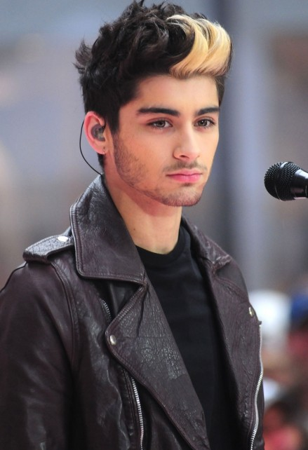
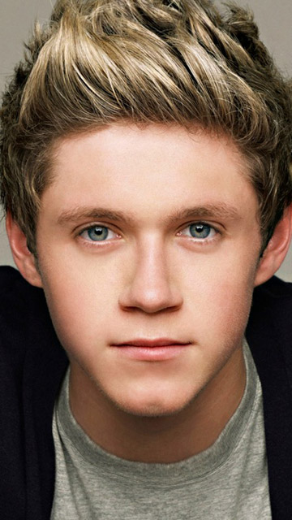

ONE DIRECTION
Introduction
One Direction is a British-Irish male pop band formed in London,England in2010 whose bright,pop-rock
sound captivated both young and old fans around the globe.The members of the group:
Zayn Malik, Liam Payne,Harry Styles and Louis Tomlinson
each auditioned and competed originally as a solo performer on the 2010 editionof the British show
'X Factor,a talent contest for spiring singers.The judges after a suggestion by Simon Cowell
-the shows mastermind-later in the season advised the quintet to pool their talents,therefore
qualifying for the Groups category.Taking the name
One Direction the boys-
all between 16 and 18 years old at the time-attracted substantive attention for their charismatic
stage presence and vocal prowess.Although One Direction fell short of winningon the
'X Factor'
Simon cowell offered the act a recording contract at his recording company Syco Entertainment,soon
after the season ended.In 2011 they officially hit the recording studio and the resulting album
'Up All Night'(2011),filled with cheerily harmonized pop songs about first-time heartbreak
and other adolescent concerns,was an immediate hit across the world.The album's popularity was fueled
in part by the song ,
What makes you beautiful an empowerment anthem that topped charts across
the globe,you can check the song here;
What makes
you so beautifuland be the judge.Their other albums are;
- Take Me Home(2011)
- Midnight Memories(2012)
- Four(2014)
- Made In The A.M.(2015)
Biography
Zayn Malik

Javvadd Zayn Malik was born on January 12,1993 in Bradford,West Yorkshire in England.He is of English
and Pakistani descent and happens to be my favourite among the quintet.Malik applied for the The X Factor
in 2009 for the first time but did not show up for the audition because he was too nervous.In 2017 he
auditioned again and was accepted into the next round though was eliminated before the final round of the
competition.After being eliminated he was grouped with the other band members to form a new act
One Direction for the remainder of the show.They finished in third place
but were immediately signed by Cowell.Malik surprised fans in 2015 by dropping out of the group's world
tour where he announced that he was leaving One Direction for good.After One Direction he got signed with RCA Records
where he released his first album:Mind of Mine in 2016,Icarus Falls in 2018 and
Nobody is Listening in 2021.
Liam Payne
Born August 29,1993 from Wolverhampton,England Payne made his debut as a singer in 2008;fourteen years
at the time.He auditioned for the first time on the fifth edition of the British television series
The X Factor and got eliminated where he auditioned again in 2010 and thats when he was put into
a group with the four other contestants to form One Direction.Payne has also worked with other
producers under the monkers " Big Payno" and "Payno" creating remixes for songs by his
group.After One Direction hiatus,Payne signed a recording deal with Republic Records in North
America where in 2017 he released Strip that down as the lead single from his debut album,LP1.
He has sold over 18 million copies in just two years since One Direction.
Niall Horan

Niall Horan was born September 13,1993 in Mullingar,Westmeath County Ireland.He was the only Irish member in
the band.A funny fact about him is that his manager had him get braces in 2011 because his front teeth
were crooked.He also does play the guitar really well and used to at times play during the
One Direction concerts.After the band hiatus he signed a recording deal as a solo artist with
Capitol Records and released his debut album Flicker in 2017 and Heartbreak Weather his
second one in 2020.
Harry Styles
Born Harry Edward Styles on February 1,1994 in Redditch,Worcestershire England,he was the youngest member
of the boy band.After the band split he was signed to Columbia Records where he released his
debut solo album:Harry Styles in 2017.He also made his acting debut in the war film Dunkirk.
In 2019 he released his second album Fine Line.He also has his own record label Erskine Records.
Aside from his music he is also known from his flamboyant fashion and is the first man to appear solo
on the cover magazine of Vogue magazine.
Louis Tomlinson
Louis was born on December 24,1991 in the town of Doncaster in South Yorkshire,England.He first auditioned
for The X Factor in 2009 but was turned down,however he returned in 2010 to try out and this time
he entered the competition successfully.He was eliminated before the final round but grouped with the
other four above.In later years after One Direction Tomlinson returned to The X Factor as
a judge and mentor.In late 2018,one of his proteges,Jamaican singer Dalton Harris won seas on 15 of the
show.As a solo artist he released his first sinle 'Just hold On' in 2016,followed by 'Back to You'
seven months later.In March 2019 he released 'Two of Us' a tender tribute to his mother.How sweet!